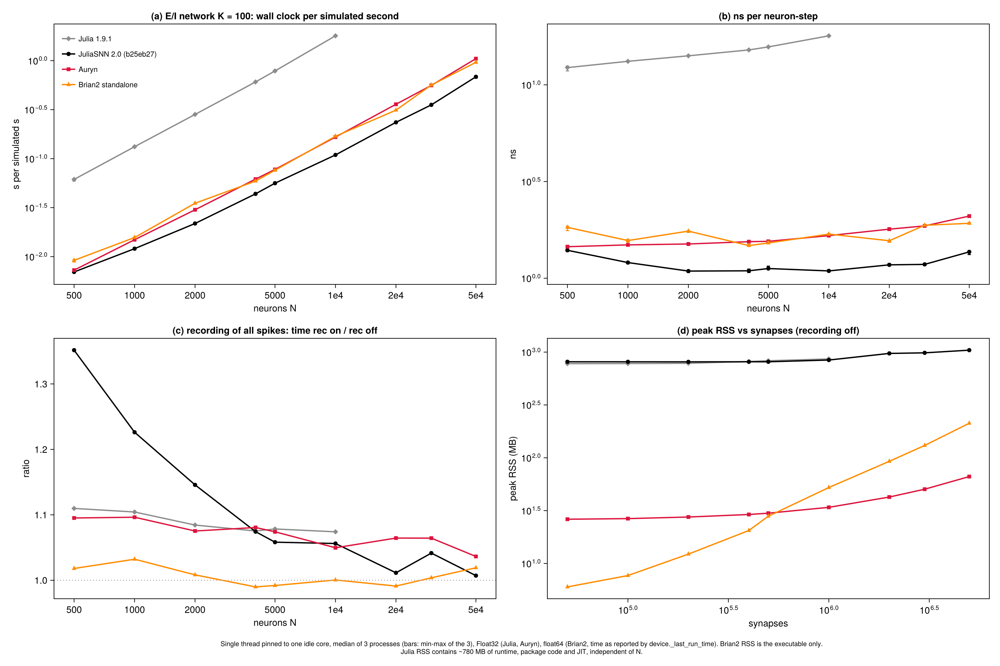
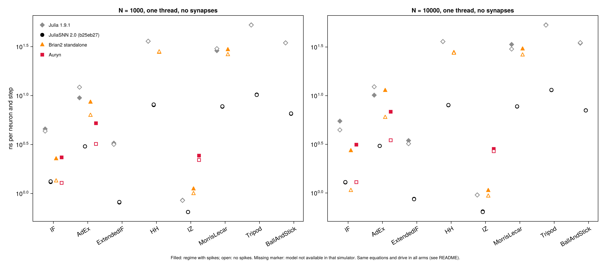
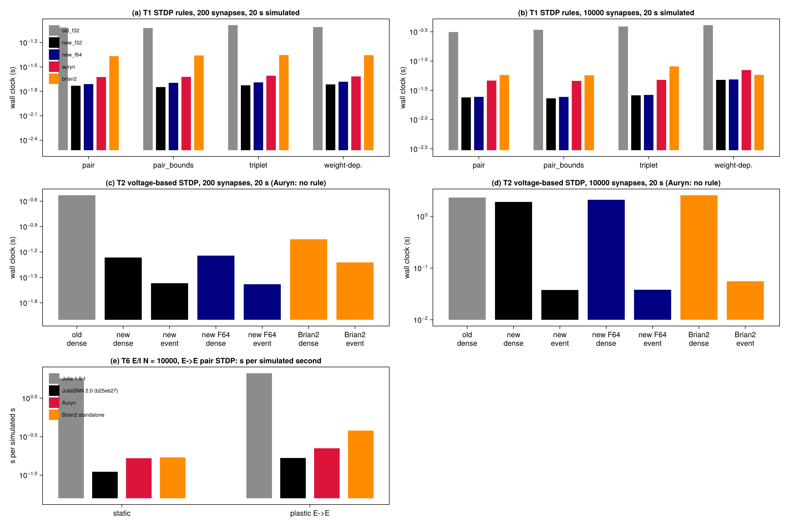
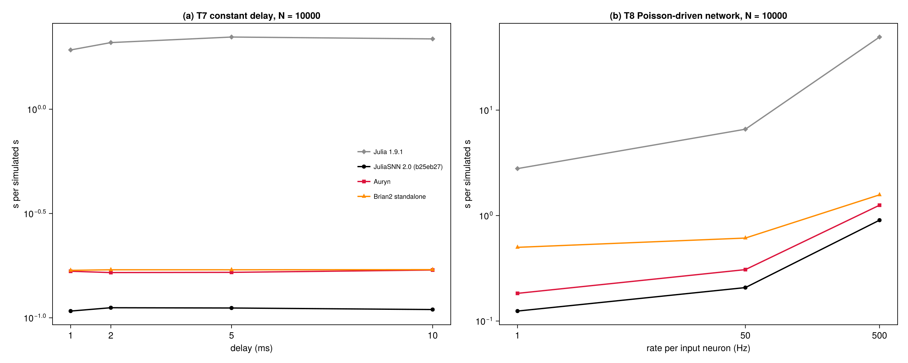

Performance comparison
This page compares SpikingNeuralNetworks.jl v2 (SNNModels 2.0) with its predecessor v1 (SNNModels 1.9.1) and with two established simulators: Auryn and Brian2 (C++ standalone mode). All arms simulate the same models with the same parameters, connectivity and inputs.
Method
- Machine. Intel Xeon w5-3425, Linux 6.8, Julia 1.12.6, Brian2 2.9.0 (
cpp_standalone, g++ 13.3 with Brian2's default flags), Auryn 0.8.3 (-O3 -march=native -ffast-math). - One thread. Every arm runs on one thread pinned to an idle core (
taskset). Brian2 OpenMP, Auryn MPI and Julia threading are not part of these comparisons. - Precision. Julia and Auryn use
Float32, Brian2 usesfloat64. JuliaFloat64runs are reported where relevant. - Timing. Each value is the median of 3 processes. Only the simulation is timed: compilation, Julia's first-call (JIT) cost and network construction are excluded. For Brian2 the time is
device._last_run_timeas Brian2 reports it. - Versions. v2 was measured at SNNModels commit
b25eb27; v1 is SNNModels 1.9.1. - Correctness. Timings are only compared between runs that agree:
- single LIF neuron: identical spike times across the three simulators;
- STDP final weights: equal to within 1e-6 between v1, v2 and Brian2;
- balanced network: matching rate and CV-ISI distributions at N = 4000.
The campaign's data, scripts and full tables are in the JuliaSNN_publication repository (validation/profilation_v1.10/perf/final_v2).
Balanced E/I network
A network of leaky integrate-and-fire neurons:
- 80 % excitatory neurons, K = 100 inputs per neuron;
- current-based synapses with a 5 ms time constant;
- 0.8 ms delays, dt = 0.1 ms, recording off.
The table gives the wall-clock time per simulated second.
| N | v1 (s) | v2 (s) | Auryn (s) | Brian2 (s) | v2 ns per neuron-step |
|---|---|---|---|---|---|
| 500 | 0.0614 | 0.00697 | 0.00728 | 0.00916 | 1.40 |
| 1 000 | 0.132 | 0.0121 | 0.0149 | 0.0157 | 1.21 |
| 2 000 | 0.283 | 0.0218 | 0.0301 | 0.0351 | 1.09 |
| 4 000 | 0.606 | 0.0437 | 0.0618 | 0.0590 | 1.09 |
| 10 000 | 1.79 | 0.109 | 0.166 | 0.169 | 1.09 |
| 20 000 | - | 0.235 | 0.359 | 0.313 | 1.17 |
| 50 000 | - | 0.684 | 1.05 | 0.961 | 1.37 |
- v2 against v1: v2 is 9 to 16 times faster than v1. v1 was measured only up to N = 10 000.
- v2 against Auryn and Brian2: v2 is 1.0 to 1.6 times faster than Auryn and Brian2 at every size.
- Spike recording: recording every spike costs v2 6 % at N = 5 000 and 1 % at N = 50 000.
- Memory: the synapse arrays take 8.3 bytes per synapse, close to Auryn's 8.5. Brian2 takes 42.
- Julia's peak RSS has a fixed part of about 800 MB for the runtime, the package code and the JIT.
- Auryn and Brian2 use 26 to 212 MB in total.

Neuron models
The table gives the cost of integrating each neuron model, in ns per neuron per step. The setup is N = 10 000 neurons with no synapses, driven into the spiking regime.
| model | v1 | v2 Float32 | v2 Float64 | Brian2 | Auryn |
|---|---|---|---|---|---|
| IF | 5.48 | 1.28 | 3.00 | 2.72 | 3.14 |
| AdEx | 10.1 | 3.05 | 5.19 | 11.3 | 6.83 |
| HH | 36.0 | 7.97 | 11.0 | 27.8 | - |
| Izhikevich | 0.96 | 0.65 | 1.30 | 1.06 | 2.84 |
| Morris-Lecar | 33.6 | 7.73 | 33.2 | 30.2 | - |
| Tripod | 53.4 | 11.4 | 32.7 | - | - |
| BallAndStick | 34.6 | 7.07 | 18.4 | - | - |
A dash means the model is not available in that simulator. The integration schemes of the simulators differ, so the firing rates are similar but not identical: AdEx fires at 71 Hz in Julia and at 81 Hz in Brian2 and Auryn.

Synaptic plasticity
STDP rules
The test is 200 or 10 000 Poisson inputs onto one neuron, with 20 s simulated. The table gives the wall-clock time in seconds.
| synapses | rule | v1 | v2 | Auryn | Brian2 |
|---|---|---|---|---|---|
| 200 | pair | 0.0965 | 0.0186 | 0.0238 | 0.0430 |
| 200 | triplet | 0.103 | 0.0188 | 0.0247 | 0.0443 |
| 10 000 | pair | 0.314 | 0.0239 | 0.0464 | 0.0579 |
| 10 000 | triplet | 0.390 | 0.0260 | 0.0477 | 0.0810 |
| 10 000 | weight-dependent | 0.411 | 0.0477 | 0.0703 | 0.0581 |
STDP is event-driven in v2, as it is in Auryn and Brian2. Its cost therefore grows slowly with the number of synapses.
Voltage-based STDP (Clopath)
This uses the same setup as the STDP rules, with 20 s simulated. Auryn has no voltage-based STDP rule. The Brian2 event-driven version is hand-written for this comparison.
| synapses | v1 dense | v2 dense | v2 event-driven | Brian2 dense | Brian2 event-driven |
|---|---|---|---|---|---|
| 200 | 0.295 | 0.0543 | 0.0270 | 0.0892 | 0.0476 |
| 10 000 | 2.32 | 1.91 | 0.0377 | 2.57 | 0.0557 |
- Dense mode (
vSTDPDenseParameter) updates every synapse at every step, so its cost grows with the number of synapses. - Event-driven mode (
vSTDPParameter, the default in v2) brings the cost at 10 000 synapses down to about 1.6 times that of pair STDP, against about 80 times for dense mode.
Plastic network
This is the balanced network with pair STDP on the E→E connections. The table gives the time per simulated second for N = 10 000.
| v1 | v2 | Auryn | Brian2 | |
|---|---|---|---|---|
| static | 1.81 | 0.111 | 0.166 | 0.170 |
| plastic E→E | 2.11 | 0.167 | 0.223 | 0.380 |
All four simulators give the same rates (6.7 to 6.9 Hz) and the same final E→E weight distributions.

Delays and Poisson input
Both tests use the balanced network with N = 10 000. The tables give the time per simulated second.
Synaptic delays. In v2 the delays are stored in ring buffers, so the cost does not depend on the delay length.
| delay | v1 | v2 | Auryn | Brian2 |
|---|---|---|---|---|
| 1 ms | 1.92 | 0.108 | 0.167 | 0.169 |
| 10 ms | 2.17 | 0.110 | 0.169 | 0.170 |
Poisson input. The network receives input from a Poisson population, and the table gives the rate of each input neuron.
| input rate | v1 | v2 | Auryn | Brian2 |
|---|---|---|---|---|
| 1 Hz | 2.79 | 0.124 | 0.183 | 0.500 |
| 50 Hz | 6.59 | 0.208 | 0.307 | 0.612 |
| 500 Hz | 49.3 | 0.904 | 1.25 | 1.57 |

Notes
- Not measured: threading, MPI and OpenMP, which are not included in these comparisons.
- Precision:
Float64populations cost 1.4 to 4 times theFloat32ones, depending on the model, and 2.3 times on the E/I network. - Per-call overhead: after the measurement, SNNModels 2.0.1 removed a fixed cost of 12 to 30 ns from each call of the single-step
train!. This cost matters only for very small networks stepped one call at a time, such as the plasticity tests above, where it is a few percent of the time.- With 2.0.1, pair STDP at 10 000 synapses takes 0.020 s.
- Event-driven voltage-based STDP at 10 000 synapses takes 0.036 s.